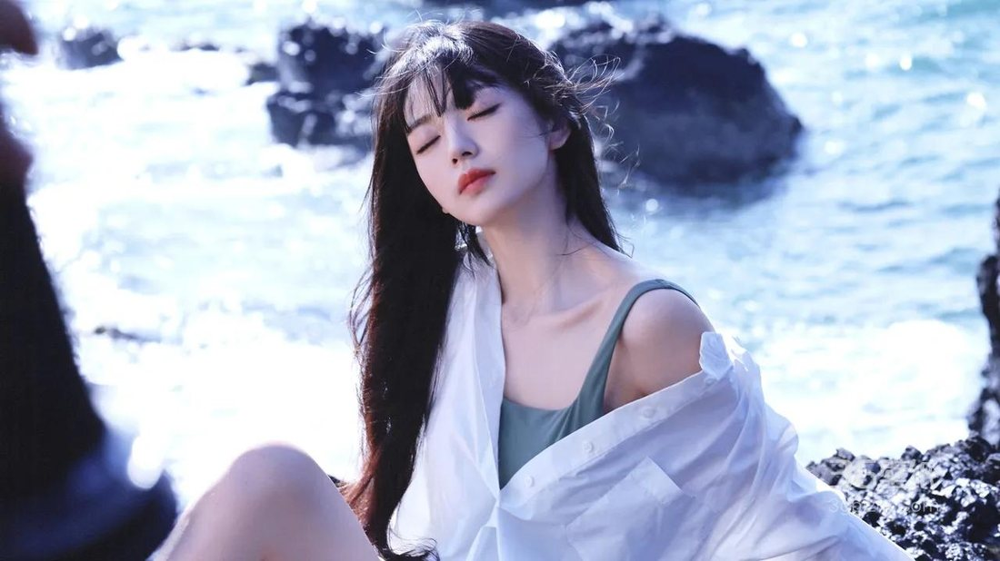

Tian Xiwei
Born on 14 October 1997 in Tongliang, Chongqing. She started acting school in 2016 at the Shanghai Theatre Academy. Most viewers know her as Li Wei in New Life Begins (2022).
Best known for Lovely Us, New Life Begins and Guardians of the Dafeng.
Three key roles
- Lovely Usas Huang Chengzi2020
- New Life Beginsas Li Wei2022
- Guardians of the Dafengas Lin'an2024
The full list is on the Works page.
2026: four dramas
In March she led Zhuyu as Fan Changyu. She became the first actress whose dramas passed the one-million heat mark on both iQIYI and Tencent Video. In May she played a rookie police officer in Low-IQ Crime, with almost no make-up. In August came the campus drama Genius Girlfriend, and in October The Golden Hairpin, where she plays two women in one show.
Details are on the Works page.
A recent photo

Photo from a public shoot, used for a personal profile only.